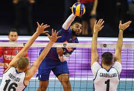

le volley-ball
c'est un sport qui consiste à faire tomber le ballon au sol dans le camp adverse.
lien vers : FFVB
geste n°1
la passe
geste n° 2
l'attaque

Geste n° 3
la défense
c'est un sport qui consiste à faire tomber le ballon au sol dans le camp adverse.
lien vers : FFVB
la passe
l'attaque

la défense